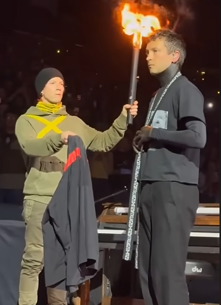

Spotify
Spotify
 Apple Music
Apple Music
HELLO CLANCY
Antes del final
Antes de la salida de Breach, en el Clancy World Tour, había una secuencia que se repetía en todos los conciertos: Tyler cogía la chaqueta de Clancy entragada por Josh (Torchbearer). Hubo una única fecha donde Tyler se niega a coger la chaqueta, y se va ignorando a Torchbearer. Muy pronto veremos el significado de este acto.
Torchbearer
Antes de proceder con los videoclips, tenemos este vídeo recapitulando la historia, pero esta vez desde la perspectiva de Torchbearer.
The Contract
Cuando Nico coge a Clancy del cuello e intenta controlarlo de nuevo, hay un conflicto interno dentro de la cabeza de Tyler. Este videclip simboliza esa lucha mental.
- La Lucha Interna - Clancy pelea contra sus demonios dentro de su cabeza, y como siempre, Torchbearer le acompaña. Justo antes de finalizar el videoclip vemos a Tyler dirigiendose a Josh mientras canta: "I promised you a contract" (te prometí un contrato).
- El Contrato - El contrato del que habla Tyler representa la promesa de luchar al lado de los Banditos en la guerra contra Dema, la canción entera representa esa misma duda sobre si va a poder o querer cumplir con su parte del trato.
- La Chaqueta - Al final del videoclip vemos la escena de la que hablamos antes, Torchbearer le ofrece la chaqueta de Clancy a Tyler. Antes de saber si este la coge o no, Clancy despierta del trance. Aquí empieza el verdadero final.
City Walls
Si has visto todos los videclips y entendido todo el lore explicado hasta ahora, estás preparado para ver el videoclip de City Walls sin necesidad de más contexto. Este es el final, hello Clancy, hello Blurryface. Te recomiendo reproducir el videoclip en pantalla completa si quieres evitar spoilers.
Lo intentaremos otra vez
Aquí acaba la historia de Clancy. Si no has entendido el final vamos a analizarlo parte por parte.
- Clancy es Nico - Recordemos que esta historia es una metáfora de una lucha contra la depresión, tanto Clancy como Nico son versiones de Tyler Joseph.
- El Ciclo - Podemos notar que al final de la canción de City Walls escuchamos la intro de Heavydirtysoul, que es donde empieza la historia. Esto se debe a que esta historia es un ciclo, otro Clancy ya habia luchado contra otro Nico antes, y así será en el futuro de nuevo, puesto a que nunca se puede eliminar una parte de ti mismo.
- Las Intenciones son Todo - ¿Cuál es el punto de todo esto entonces? Como personas, estamos condenadas a equivocarnos, caer y fallar una y otra vez, pero lo que de verdad cuenta es volverlo a intentar, aunque vuelvas a fallar repite el ciclo y hazlo un poco mejor la próxima vez.
Lore no cubierto
La historia de Twenty One Pilots es muy extensa, y he tenido que saltarme algunas partes para poder cubrir los elementos más importantes de una forma relativamente amena. Si quieres enterarte del lore completo te dejo aquí dos videos que yo mismo he usado como fuente de información.
Videos por: Nobody Asked For
Vessel
Vessel es el primer álbum de estudio de Twenty One Pilots, y aunque no forme parte del lore hay elementos que salen de este álbum. Aquí hay unos ejemplos:
| ELEMENTO | LETRA | CANCIÓN |
| Voldsøy | "Behind my eyelids are islands of violence" | Migrane |
| City Walls | "Entertain my faith" | Holding On To You |
| Intentions | "Intentions are everything" & "Stay alive for me" | Truce |